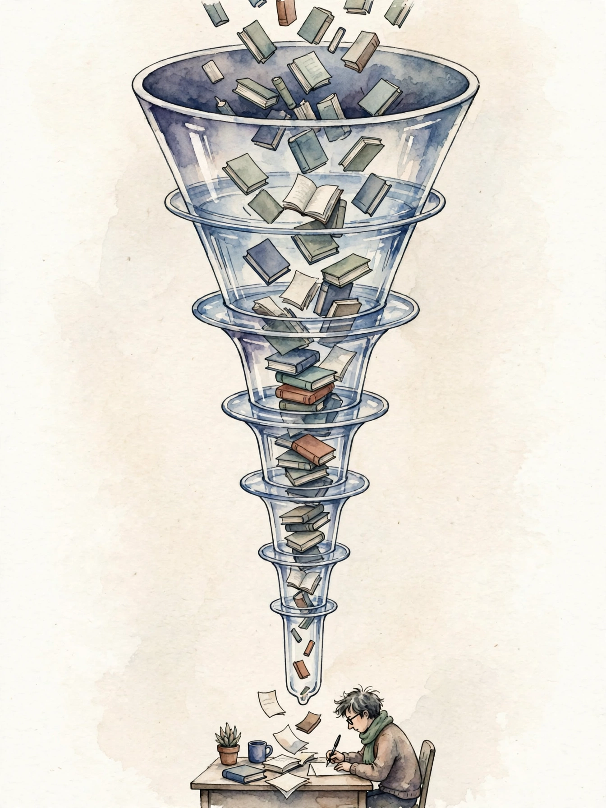
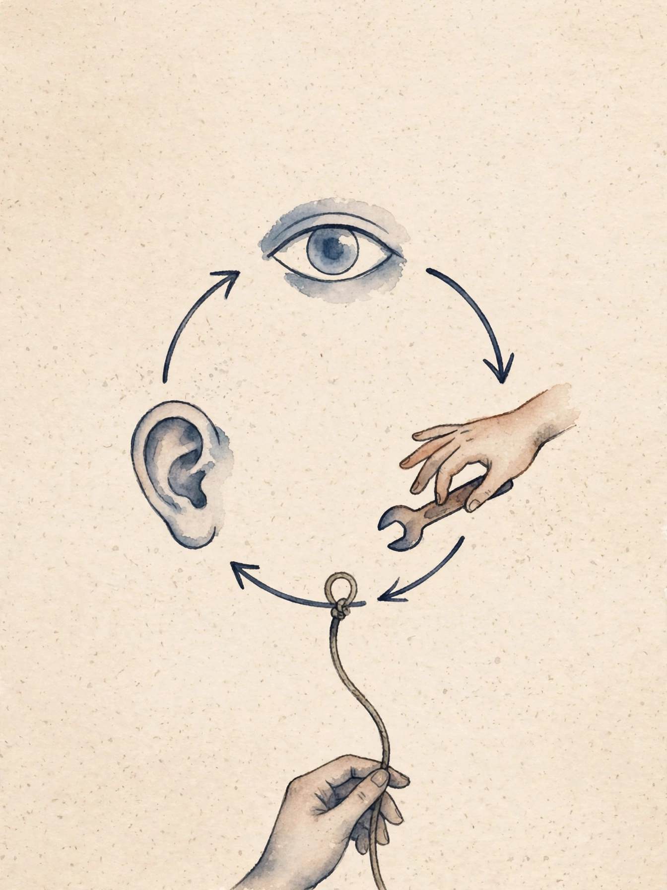

Unit 07 · RAG and agentic systems
Twelve concepts turn a language model into a system that reads and acts: the retrieval pipeline, advanced retrieval, hybrid search, reranking, context construction, function calling, tool results, ReAct, agent state, stopping rules, permissions, and failure separation. Every number below comes from the lesson.
How to read this page. Three tags separate fact from invention.
From the lesson A claim, number, or figure that appears in the lesson source, with its section cited.
Illustration Invented by the companion: an analogy, a toy with values you supply, or a what-if. Never lesson content.
Companion Editorial framing or a transferable principle. The lesson did not say it this way.

From the lessonC01 items 2-6
The model knows the world up to its cutoff. How does it answer about last week's policy change? The toy: corpus 100 docs, 8 relevant to the query. Retrieve top 20 by cosine, 6 relevant land in the set. Recall 0.75, precision 0.30. The model now sees 6 of 8 facts. The pipeline has two halves. Offline: chunk, embed, index. Online: embed the query, ANN search, top-k online. The pipeline is a funnel. Wide at the bottom, narrow at the top. Recall is set by the index and k, precision by the embedding quality.
From the lessonC01 items 6, 11
Doubling k to 40 catches 7 relevant: recall 0.875, precision 0.175. Figure u07_fig01 shows the top-k with hits marked. The check: a query built from a known doc must return that doc in the top-k. If it does not, the embedder or the chunker is wrong, not the index. The broken assumption: the chunker keeps facts whole. A table split across two chunks retrieves half the answer. Fix with overlapping chunks or structure-aware parsing.
From the lessonC01 items 4, 14 Funnel bench: recall and precision on your counts.
Reproduce the lesson: 8, 20, 6 gives recall 0.75, precision 0.30. Try k 40 with 7 hits: 0.875 and 0.175.
From the lessonC02 items 2-6
The user asks a vague question, the embedding matches vague docs, what then? The toy: query "it broke again". Rewrite: "pump P-101 failure modes". The rewrite retrieves the manual, the raw query retrieves forum complaints. Basic retrieval is one shot. Advanced retrieval is a small program around the index: rewrite the query, retrieve, expand, retrieve again. HyDE: generate a hypothetical answer, embed it instead of the query, because nearest neighbors of the answer are nearer the truth. Multi-hop: retrieve, read, form a follow-up query, retrieve again.
From the lessonC02 items 6, 11
The computed example: single-hop recall@20 = 0.62. Two-hop recall@20 = 0.81 at 2.1x latency. Query rewrite adds +0.09 recall at 1.3x latency. The ladder is measurable. Each step trades latency for recall, and the failure mode is drift: each hop can wander off-topic, so cap hops at 2-3. The broken assumption: hops add signal. The expander can hallucinate a follow-up query and hop 2 retrieves fiction. Ground each hop in retrieved text.
From the lessonC03 items 2-6
Dense search misses the exact part number "XJ-4471", keyword search misses the paraphrase "pump failure", how do you get both? The toy: doc A: BM25 0.9, dense 0.4. Doc B: BM25 0.3, dense 0.8. Fusion 0.5/0.5: A 0.65, B 0.55. A wins, both signals counted. BM25 testifies about exact terms, dense about meaning. Fusion is the jury. Weighted sum: s = alpha times bm25_norm + (1 - alpha) times dense. RRF: s = sum 1/(k + rank_i) with k = 60, which needs no normalization, only ranks. The mechanism is error decorrelation: the two signals err in different ways.
From the lessonC03 items 6, 11
The computed example: docs A/B/C, BM25 [0.9, 0.3, 0.5], dense [0.4, 0.8, 0.5], alpha 0.5 gives fused [0.65, 0.55, 0.50]. Dense alone ranks B first, fusion ranks A first. Figure u07_fig02. The broken assumption: scores are comparable. Unnormalized BM25 dwarfs cosine and alpha becomes meaningless. Normalize first, always.
From the lessonC03 items 5, 14 Fusion bench: weighted-sum fusion on your scores.
Reproduce the lesson: the defaults give [0.65, 0.55, 0.50]. Try the lab: alpha 0.8 gives [0.80, 0.40, 0.50].
From the lessonC04 items 2-6
The retriever is fast and dumb, the reader needs the best 5 docs, who bridges the gap? The toy: 50 candidates from hybrid search, cross-encoder scores each pair (query, doc), top 5 go to the model. Precision@5 jumps from 0.40 to 0.80. The retriever is a bouncer, the reranker is the judge. The bouncer admits 50, the judge picks 5. Bi-encoder: one vector per doc, dot product, fast. Cross-encoder: joint (query, doc) encoding, slow, accurate. Two stages: recall from stage 1, precision from stage 2. The product bounds the end quality.
From the lessonC04 items 6, 11
The computed example: stage 1 recall@50 = 0.90. Rerank precision@5 = 0.80. End-to-end: 0.72 of relevant docs reach the model in the top 5. The stages multiply. The broken assumption: the candidates contain the answer. Stage-1 recall 0.40 means the reranker polishes the wrong 50. Fix retrieval first. The latency rule: N times single-call ms must fit the budget, else shrink N. The lab asks: N = 200 at 15 ms per call is 3000 ms.
From the lessonC05 items 2-6
5 reranked docs, 800 tokens each, window 4000, system prompt 500, what fits? The toy: budget = 4000 - 500 - 500 (reserve for answer) = 3000. Docs at 800 each: 3 fit (2400), the 4th is cut at 600 tokens with a truncation mark. Order by score, cut from the bottom. The window is a suitcase. Fold the big items, put essentials on top, and leave room for the trip home (the answer). Greedy pack by score: take docs in rerank order until the budget fills, truncate the last. The computed example: W = 8000, S = 600, R = 1000, docs [1500, 1200, 900, 800, 700]. Budget 6400. All 5 fit (5100). Add a 6th at 2000: total 7100, cut 700 from the last doc.
From the lessonC05 item 11
The broken assumption: order equals value. The 5th doc holds the key fact, truncation cuts it. Mitigate with per-doc minimum guarantees or compression. The lab asks: W 4000, S 500, R 500, docs of 800. Three fit.
From the lessonC05 items 4, 7 Packing bench: the lesson's budget arithmetic.
Reproduce the lesson: the defaults give budget 3000, 3 docs fit, 600 cut. Try the computed example: 8000, 600, 1000, and 1500, 1200, 900, 800, 700, 2000.
From the lessonC06 items 2-6
The model says "I will search for the refund policy", who does the searching? The toy schema: {"name": "search", "arguments": {"q": "string"}}. The model emits the call, the runtime runs it and pastes the result back. Words become actions. The schema is a menu, the call is an order, the runtime is the kitchen. The model can only order what is on the menu, in the format the menu demands. A bad order bounces back with an error. The loop: validate, execute, append the result as a new message, continue until the model answers or stops.
From the lessonC06 items 6, 11
The computed example: schema with one required string arg. Valid call parses in 1 step. Call missing "q" fails validation with error "missing required argument: q". The error message is part of the contract. Figure u07_fig03 shows the call and result. The check: 100 synthetic calls, all valid ones execute, all invalid ones return errors naming the fault. If a bad call executes, validation is broken. The broken assumption: the schema tells the truth. The "search" tool that actually deletes records is invisible to the model. The registry must be trusted.
From the lessonC06 items 4, 6 Validation bench: the lesson's dispatch rule on your call.
Reproduce the lesson: name search with a q argument validates. Clear the q field and the error names the missing argument.
From the lessonC07 items 2-6
The search tool returns 50,000 tokens, what happens to the window? The toy: result cap 2000 tokens, truncate with a marker, log the full result to a store. The model sees the head, the audit keeps the body. Tools are senses, results are sensations. A sense that floods the brain with noise is worse than no sense. Each tool reports concisely or not at all. The computed example: raw result 50,000 tokens, cap 2000, kept head 2000 with marker. Error case: timeout returns {"error": "timeout", "retry": true}. The model retries once. Errors return as typed results, not exceptions, so the model can react.
From the lessonC07 item 11
The broken assumption: retries are safe. The "send_email" tool is not idempotent, a retry sends twice. Flag side effects in the schema. The check: no result entering the context exceeds the cap on a fuzz run. If one does, the cap is applied in the wrong place.
From the lessonC08 items 2-6
The model must use two tools in sequence, how does it keep track? The toy trace: Thought "I need the policy doc", Action search(q="refund policy"), Observation "doc found, 3 pages", Thought "now I summarize", Action answer(...). The trace is the working memory. ReAct thinks out loud with hands. Each thought plans one move, each action moves, each observation reports back. The prompt format interleaves the three roles, and the runtime injects each observation. The computed example: trace with 2 tool calls, 14 total steps, final answer cites both observations. A broken trace loops Thought without Action 6 times, and the loop detector fires.
From the lessonC08 item 11
The broken assumption: thoughts guide actions. The model writes a good thought then calls the wrong tool. The thought is decoration. Grade the actions. The check: on 20 scripted tasks, the agent calls the right tools in the right order. If it never acts, the trigger format is wrong. Figure u07_fig03 shows one ReAct cycle.

From the lessonC09 items 2-6
The agent books a flight in step 3 and needs the confirmation code in step 9, where does it live? The toy: working memory = the trace (last 8 steps). Episodic = the session log (all steps, summarized). Long-term = the user profile (window seat). Three stores, three lifetimes. The agent has a desk (trace), a notebook (session summary), and a filing cabinet (profile). The desk is fast and small, the notebook is cheap and lossy, the cabinet is permanent and must be curated. Compaction: when the trace exceeds the window, summarize the oldest steps into the notebook, keep the newest verbatim.
From the lessonC09 items 6, 11
The computed example: 40-step trace, window 8, summary every 8 steps. Final context: 8 verbatim steps + 4 summaries. Token count 3200 vs 12000 uncompacted, 3.75x smaller. The broken assumption: the summary keeps what matters. The code is summarized away, step 30 needs it verbatim. Keep verbatim anchors for codes, IDs, and numbers. The check: a fact from step 2 must still be answerable at step 30.
From the lessonC09 items 5, 7 Compaction bench: the lesson's window math.
Reproduce the lesson: 40 steps, window 8, gives 4 summaries with 8 steps verbatim.
From the lessonC10 items 2-6
The agent called search 12 times and keeps rephrasing, when does someone pull the plug? The toy rules: max 10 steps, no repeat action twice in a row, stop when the model emits the answer trigger. Step 11 fires the cap. The loop is a dog on a leash. The leash is the step cap, the collar is the repeat detector, the owner is the answer trigger. A loop without a leash runs until the budget dies. After each step, check: step count >= N, last two actions identical, or answer trigger present. Any true means stop.
From the lessonC10 items 6, 11
The computed example: 100 scripted runs, cap 10. 91 finish by answer, 6 hit the repeat guard, 3 hit the cap. The 3 cap hits are the tasks to fix. The check: cap-hit rate below 5% on the task suite. Above that, the cap is too tight or the tasks are too hard. The broken assumption: the cap binds only runaways. A legit 12-step task dies at step 10. Set the cap from the task distribution, not from superstition.
From the lessonC11 items 2-6
The agent wants to delete the production database as cleanup, who says no? The toy tiers: the read tier (always allow), write sandbox (allow with log), irreversible (require approval). The delete needs a human click. Tools carry badges: green, yellow, red. Green tools run free, yellow tools run logged, red tools wait at the gate. Before dispatch, check the tier. Red: pause, request approval with the exact call shown, resume on grant. The mechanism is a gate, not a suggestion.
From the lessonC11 items 6, 11
The computed example: 12 tools, 7 green, 3 yellow, 2 red. 1000 actions: 0 red executed without approval, 3 approval requests denied by the human. The gate held. The check: a red tool called in a test fires the approval path, never the direct path. The broken assumption: tiers match reality. The "read" tool with a hidden side effect (logging reads triggers alerts) is misbadged. Audit tools for hidden writes. Figure u07_fig04 carries the red panel.
From the lessonC12 items 2-6
The agent answered wrong. Was the doc missing, the model sloppy, or the tool broken? The toy: check the trace. Doc absent means retrieval failure. Doc present but the answer ignores it means model failure. Tool errored means tool failure. Three bins, three fixes. The pipeline is a relay race. When the baton drops, find which handoff failed. The protocol: (1) was a relevant doc retrieved? No means retrieval. (2) did the tool return correctly? No means tool. (3) did the answer use the evidence? No means model. The order matters, check upstream first.
From the lessonC12 items 6, 11
The computed example: 100 wrong answers labeled: 47 retrieval, 31 model, 22 tool. Fixing retrieval (better chunks) recovers 47, the biggest lever. The check: the bins sum to the error count, and a fix to the top bin moves the metric. The broken assumption: single cause. Retrieval was weak AND the model ignored the doc. Label the primary cause, note the secondary. Figure u07_fig04 maps the three bins.
From the lessonC12 items 5, 14 Separation bench: the lesson's protocol on your trace flags.
Answer yes or no to the three checks. The first no in pipeline order names the bin.
Every lesson on this page, in order. Tap one to return to its chapter.